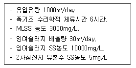
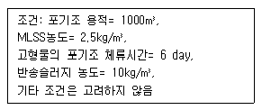
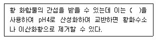
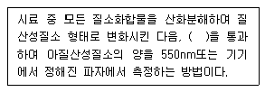
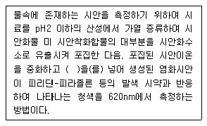
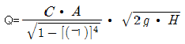
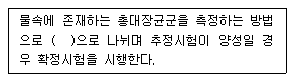
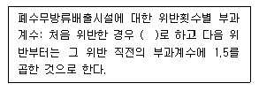
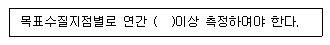
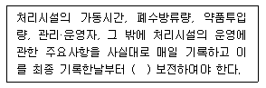

수질환경기사 (2013-06-02 기출문제)
1과목: 수질오염개론
1. 어느 하천의 BODu가 8mg/L이고, 탈산소계수(K1)가 0.1/d 일 때, 4일 후 남아있는 하천의 BOD 농도는?
- 3.2 mg/L
- 3.6 mg/L
- 4.1 mg/L
- 4.3 mg/L
(정답률: 66%)

2. 수분 함량 97% 의 슬러지에 응집제를 가하니 [상등액:침전슬러지] 용적비가 2:1로 되었다. 이 때 침전슬러지의 수분함량은? (단, 비중은 1.0, 응집제의 양은 무시, 상등액은 고형물이 없음)
- 91%
- 93%
- 95%
- 97%
(정답률: 64%)
3. 어느 배양기의 제한기질농도(S)가 1000mg/L, 세포의 최대 비증식계수(μmax)가 0.2/hr일 때 Monod식에 의한 세포의 비증식계수(μ)는? (단, 제한기질 반포화농도(Ks)=20mg/L)
- 0.098/hr
- 0.196/hr
- 0.294/hr
- 0.392/hr
(정답률: 78%)
4. 물의 이온화적(Kw)에 관한 설명으로 옳은 것은?
- 25℃에서 물의 Kw가 1.0×10-14이다.
- 물은 강전해질로서 거의 모두 전리된다.
- 수온이 높아지면 감소하는 경향이 있다.
- 순수의 pH는 7.0이며 온도가 증가할수록 pH는 높아진다.
(정답률: 75%)
5. 반감기가 2일인 방사성 폐수의 농도가 100mg/L라면 감소 속도상수는? (단, 1차 반응 기준)
- 0.128 day-1
- 0.242 day-1
- 0.347 day-1
- 0.423 day-1
(정답률: 77%)
6. 0℃에서 DO 8.0mg/L인 물의 DO 포화도는 몇 %인가? (단, 대기의 화학적 조성 중 02는 21%(V/V), 0℃에서 순수한 물의 공기 용해도는 38.46mL/L)
- 50.7
- 60.7
- 63.5
- 69.3
(정답률: 45%)
7. 1차 반응식이 적용된다고 할 때 완전혼합반응기(CFSTR) 체류시간은 압출형반응기(PER) 체류시간의 몇 배가 되는가? (단, 1차 반응에 의해 초기농도의 70%가 감소되었고, 자연지수로 계산하며 속도상수는 같다고 가정함.)
- 1.34
- 1.51
- 1.72
- 1.94
(정답률: 49%)
8. 해수의 특성으로 틀린 것은?
- 해수는 HCO3를 포화시킨 상태로 되어 있다.
- 해수의 밀도는 염분비 일정법칙에 따라 항상 균일하게 유지한다.
- 해수 내 전체질소 중 약 35% 정도는 암모니아성질소와 유기 질소의 형태이다.
- 해수의 Mg/Ca 비는 3~4정도로 담수에 비하여 크다.
(정답률: 72%)
9. 원생동물의 종류에 관한 내용으로 옳은 것은?
- Paramecia는 자유롭게 수영하면서 고형물질을 섭취한다.
- Vorticella는 불량한 활성슬러지에서 주로 발견된다.
- Sarcodina는 나팔의 입에서 물흐름을 일으켜 고형물질만 걸러서 먹는다.
- Suctoria는 몸통을 움직이면서 위족으로 고형물질을 몸으로 싸서 먹는다.
(정답률: 71%)
10. 다음의 유기물 1mole이 완전 산화될 때 이론적인 산소요구량이 가장 적은 것은?
- C6H6
- C6H12O6
- C2H5OH
- CH3COOH
(정답률: 80%)
11. μ(세포비증가율)가 μmax(세포최대증가율)의 60%일 때의 기질농도(S60)와 20%일 때 기질농도(S20)와의 비(S60/S20)는? (단, 배양기내의 세포비 증가율은 Monod식 적용)
- 32
- 16
- 8
- 6
(정답률: 50%)
12. 다음 중 적조 현상에 관한 설명으로 틀린 것은?
- 수괴의 연직안정도가 작을 때 발생한다.
- 강우에 따른 하천수의 유입으로 해수의 염분량이 낮아지고 영양염류가 보급될 때 발생한다.
- 적조조류에 의한 아가미 폐색과 어류의 호흡장애가 발생한다.
- 수중 용존산소 감소에 의한 어패류의 폐사가 발생한다.
(정답률: 79%)
13. glycine(CH2(NH2)COOH) 7몰을 분해하는데 필요한 이론적 산소 요구량은? (단, 최종산물은 HNO3, CO2, H2O이다.)
- 724 g O2
- 742 g O2
- 768 g O2
- 784 g O2
(정답률: 72%)
14. 다음의 각종 용액 중 몰(mole) 농도가 가장 큰 것은? (단, Na, Cl의 원자량은 각각 23. 35.5)
- 300g 수산화나트륨/4ℓ
- 3.5g 황산/30mℓ
- 0.4kg 염화나트륨/10ℓ
- 5.2g 염산/0.1ℓ
(정답률: 58%)
15. 용존산소농도가 9.0mg/L인 물 1000리터가 있다. 이 물의 용존산소를 완전히 제거하기 위해 이론적으로 필요한 Na2SO3 량은? (단, Na: 23, S: 32 이다.)
- 14.2g
- 35.5g
- 45.5g
- 70.9g
(정답률: 48%)
16. 다음 중 CSOs, SSOs에 대한 설명으로 옳지 않은 것은?
- CSOs는 도시지역 비점오염부하 중 큰 비중을 차지한다.
- SSOs는 합류식 하수도에서 우천 시 하수관거를 통해 공공수역으로 방류된 처리하수를 말한다.
- COSs는 합류식 하수관거의 용량을 초과하여 처리되지 못하고 유출되는 오수를 말한다.
- 도시하천의 수질개선을 위해서는 CSOs에 대한 처리대책이 필요하다.
(정답률: 52%)
17. 0.02N 약산이 1.0% 해리되어 있다면 이 수용액의 pH는?
- 3.1
- 3.4
- 3.7
- 3.9
(정답률: 60%)
18. 생태계에서 질소의 순환을 설명한 내용으로 옳지 않은 것은?
- 대기 중의 질소는 질소고정박테리아와 특정한 조류에 의해 단백질로 전환된다.
- 질산화 미생물은 호기성미생물이며 독립영양미생물에 속한다.
- Nitrosomonas균은 호기성 상태에서 암모니아를 아질산염으로 전환시킨다.
- 소변 속의 질소는 요소로서 효소 urease에 의하여 질산성 질소로 가수 분해된다.
(정답률: 57%)
19. 지구에서 물(담수)의 저장 형태 중 가장 많은 양을 차지하는 것은?
- 만년설과 빙하
- 담수호
- 토양수
- 대기
(정답률: 80%)
20. 미생물의 분류에서 탄소원이 CO2이고 에너지원을 무기물의 산화·환원으로부터 얻는 미생물은?
- Photoautotrophics
- Chemoautotrophics
- Photoheterotrophics
- Chemoheterotrophics
(정답률: 58%)
2과목: 상하수도계획
21. 하수도 계획의 목표연도는 원칙적으로 몇 년으로 설정하는가?
- 15년
- 20년
- 25년
- 30년
(정답률: 78%)
22. 원심력 펌프의 규정회전수는 2회/sec, 규정토출량이 32m3/min, 규정양정(H)이 8m이다. 이때 이 펌프의 비교 회전도는?
- 약 143
- 약 164
- 약 182
- 약 201
(정답률: 66%)
23. 정수시설인 플록형성지에 관한 설명으로 틀린 것은?
- 혼화지와 침전지 사이에 위치하고 침전지에 붙여서 설치한다.
- 플록형성시간은 계획정수량에 대하여 20~40분간을 표준으로 한다.
- 플록형성지 내의 교반강도는 하류로 갈수록 점차 감소시키는 것이 바람직하다.
- 야간근무자도 플록형성상태를 감시할 수 있는 투명도 게이지를 설치하여야 한다.
(정답률: 74%)
24. 하천수를 수원으로 하는 경우에 사용하는 취수시설인 취수보에 관한 설명으로 틀린 것은?
- 일반적으로 대하천에 적당하다.
- 안정된 취수가 가능하다.
- 침사 효과가 적다.
- 하천의 흐름이 불안정한 경우에 적합하다.
(정답률: 52%)
25. 하수관의 맨홀 설치에 관한 설명으로 틀린 것은?
- 맨홀은 관거의 기점, 방향, 경사 및 관경 등이 변하는 곳에 설치한다.
- 관거 직선부에서는 맨홀의 최대 간격은 600mm이하 관에서 최대 간격 75m이다.
- 맨홀의 상판높이(인버트의 상단~맨홀상판)는 유지 관리상 작업원이 서서 작업할 수 있도록 1.8~2.0m 정도로 하는 것이 바람직하다.
- 맨홀 부속물인 인버트의 발디딤부는 5~7%의 횡단경사를 둔다.
(정답률: 58%)
26. 계획우수량을 정할 때 고려하는 빗물펌프장의 확률년수로 옳은 것은?
- 5년~10년
- 10년~20년
- 20년~30년
- 30년~50년
(정답률: 72%)
27. 하수 펌프장 시설인 스크류펌프의 일반적 장단점으로 틀린 것은?
- 회전수가 낮기 때문에 마모가 적다.
- 수중의 협잡물이 물과 함께 떠올라 폐쇄 가능성이 크다.
- 기둥에 필요한 물채움장치나 밸브 등 부대시설이 없어 자동운전이 쉽다.
- 토출측의 수로를 압력관으로 할 수 없다.
(정답률: 54%)
28. 하수처리에 사용되는 생물학적 처리공정 중 부유미생물을 이용한 공정이 아닌 것은?
- 산화구법
- 접촉산화법
- 질산화내생탈질법
- 막분리활성슬러지법
(정답률: 57%)
29. 펌프의 토출량이0.1m3/sec, 토출구의 유속이 2m/sec로 할 때 펌프의 구경은?
- 약 255mm
- 약 365mm
- 약 475mm
- 약 545mm
(정답률: 60%)
30. 하수처리에서 막분리 활성슬러지법(MBR법)의 장단점 및 설계, 유지관리상의 유의점이 아닌 것은?
- 2차침전지의 침강성과 관련된 문제가 없다.
- 완벽한 고액분리가 가능하며 높은 MLSS 유지가 가능하다.
- 적은 소요부지로 부지이용성이 탁월하다.
- 분리막 파울링에 대한 대처가 용이하다.
(정답률: 50%)
31. 펌프 운전시 발생할 수 있는 비정상현상 중 펌프운전중에 토출량과 토출압이 주기적으로 숨이 찬 것처럼 변동하는 상태를 일으키는 현상으로 펌프 특성 곡선이 산형에서 발생하며 큰 진동을 발생하는 경우를 무엇이라 하는가?
- 캐비테이션
- 서어징
- 수격작용
- 크로스커넥션
(정답률: 64%)
32. 지하수 취수시 적용되는 적정양수량의 정의로 옳은 것은?
- 최대양수량의 80% 이하의 양수량
- 한계양수량의 80% 이하의 양수량
- 최대양수량의 70% 이하의 양수량
- 한계양수량의 70% 이하의 양수량
(정답률: 76%)
33. 하수 슬러지의 혐기성 소화가스의 포집과 저장 시설을 정할 때 고려하여야 할 사항으로 틀린 것은?
- 가스포집관은 내경 100~300mm 정도로 한다.
- 하루에 발생하는 가스부피의 1/2정도를 저장할수 있는 용량의 가스 저장조를 설치한다.
- 관부식 방지를 위한 탈염소 장치를 설치한다.
- 슬러지 소화조 지붕의 가스돔 및 가스포집관에 안전장치를 설치한다.
(정답률: 48%)
34. 저수시설을 형태적으로 분류할 때의 구분과 가장 거리가 먼 것은?
- 지하댐
- 하구둑
- 유수지
- 저류지
(정답률: 65%)
35. 계획 오수량 산정시, 우리나라 하수도 시설기준상지하수량 범위기준으로 옳은 것은?
- 1인1일 최대오수량의 5~8%
- 1인1일 최대오수량의 10~20%
- 시간 최대오수량의 5~8%
- 시간 최대오수량의 10~20%
(정답률: 69%)
36. 상수관로에서 조도계수 0.014, 동수경사 1/100이고, 관경이 400mm일 때 이 관로의 유량은? (단, 만관 기준, Manning 공식에 의함)
- 3.8m3/min
- 6.2m3/min
- 9.3m3/min
- 11.6m3/min
(정답률: 53%)
37. 상수처리를 위한 급속여과지의 형식 중 여과유량의 조절방식에 따른 구분으로 틀린 것은? (단, 정속여과방식의 정속여과 제어방식 기준)
- 유량제어형
- 수위제어형
- 정압제어형
- 자연평형형
(정답률: 45%)
38. 하수 슬러지의 수송 관경에 관한 내용으로 옳은 것은?
- 관내유속은 0.3~0.5m/sec를 표준으로 한다.
- 관내유속은 0.5~1.0m/sec를 표준으로 한다.
- 관내유속은 1.0~1.5m/sec를 표준으로 한다.
- 관내유속은 1.5~2.0m/sec를 표준으로 한다.
(정답률: 48%)
39. 하수처리 방법인 장기포기법에 관한 설명으로 틀린 것은?
- 활성슬러지법의 변법으로 플러그흐름 형태의 반응조에 HRT와 SRT를 길게 유지하고 동시에 MLSS농도를 높게 유지하면서 오수를 처리하는 방법이다.
- 형상은 장방형 또는 정방형으로 하며 장방형의 경우 유로의 폭은 유효수심의 1~2배 범위에서 결정한다.
- 유효수심은 2~4m를 표준으로 한다.
- 질산화가 진행되면서 pH의 저하가 발생한다.
(정답률: 41%)
40. 하수처리시설에서 중력식 침사지에 대한 설명으로 틀린 것은?
- 평균 유속은 0.30m/s를 표준으로 한다.
- 체류시간은 2~3분을 표준으로 한다.
- 수심은 유효수심에 모래퇴적부의 깊이를 더한 것으로 한다.
- 침사지 표면부하율은 오수침사지의 경우 1800m3/m2 · d정도로 한다.
(정답률: 61%)
3과목: 수질오염방지기술
41. 비중 1.7, 입경 0.⑤mm인 입자가 침전지에서 침강할 때 침강속도가 0.36m/hr이었다면 비중 2.7, 입경 0.06mm인 입자의 침강속도는? (단, 물의 온도, 점성도 등 조건은 같고, stokes법칙을 따르며, 물의 비중은 1.0이다.)
- 약 0.63 m/hr
- 약 0.87 m/hr
- 약 1.12 m/hr
- 약 1.26 m/hr
(정답률: 49%)
42. 36mg/L의 암모늄 이온(NH4+)을 함유한 5000m3의 폐수를 50000g CaCO3/m3의 처리용량을 가지는 양이온 교환수지로 처리하고자 한다. 이 때 소요 되는 양이온 교환수지의 부피(m3)는?
- 6
- 8
- 10
- 12
(정답률: 51%)
43. Phostrip 공정에 관한 설명으로 옳지 않은 것은?
- Stripping을 위한 별도의 반응조가 필요하다.
- 인 제거시 BOD/P비에 의하여 조절되지 않는다.
- 기존 활성슬러지 처리장에 쉽게 적용 가능하다.
- 인 제거를 위한 약품(석회 등) 주입이 필요 없다.
(정답률: 46%)
44. 1차 처리된 분뇨의 2차 처리를 위해 폭기조, 2차침전지로 구성된 표준 활성슬러지를 운영하고 있다. 운영 조건이 다음과 같을 때 고형물 체류시간(SRT)은?

- 약 2일
- 약 2.5일
- 약 3일
- 약 3.5일
(정답률: 52%)
45. 비소(As)함유·폐수처리 방법으로 가장 일반적인 것은?
- 아말감법
- 황화물 침전법
- 수선화물 공침법
- 알칼리 염소법
(정답률: 49%)
46. 빙류하기전의 폐수에 염소소독을 하였다. 6분 동안 99%의 세균이 살균되었고 이때 잔류염소 농도 0.1mg/L이다. 동일 조건에서 시간을 반으로 줄이면 몇 %의 세균이 살균되는가? (단, 세균의 사멸은 1차 반응 속도식 기준)
- 90%
- 92%
- 94%
- 96%
(정답률: 50%)
47. 100mg/L의 에탄올만을 함유하는 20000m3/day의 공장폐수를 재래식 활성슬러지 공법으로 처리할 경우, 적절한 처리를 위하여 요구되는 영양염류(질소, 인)의 첨가량(kg/day)은 약 얼마인가? (단, 에탄올은 생물학적으로 100% 분해되며, BOD:N:P=100:5:1이다.)
- 질소 - 209, 인 - 42
- 질소 - 239, 인 - 48
- 질소 - 253, 인 - 51
- 질소 - 285, 인 - 57
(정답률: 39%)
48. 1차 침전지로 유입되는 하수는 300mg/L의 부유 고형물을 함유하고 있다. 1차 침전지를 거쳐 방류되는 유출수 중의 부유 고형물 농도는 120mg/L이다. 처리 유량이 50000m3/day이면 1차 침전지에서 제거되는 슬러지의 양은? (단, 1차 슬러지 고형물 함량은 2%, 비중은 1.0이다.)
- 300m3/day
- 350m3/day
- 400m3/day
- 450m3/day
(정답률: 38%)
49. MLSS농도 1500mg/L의 혼합액을 1000mL 메스실린더에 취해 30분간 정치했을 때의 침강 슬러지가 차지하는 용적이 220mL 였다면 이 슬러지의 SDI는?
- 0.68
- 0.86
- 1.21
- 1.36
(정답률: 42%)
50. 하수 슬러지의 감량시설인 소화조의 소화효율은 일반적으로 슬러지의 VS 감량률로 표시된다. 소화조로 유입되는 슬러지의 VS/TS비율이 70%, 소화슬러지의 VS/TS비율이 50%일 경우 소화조의 효율은 몇 %인가?
- 42.7%
- 48.1%
- 51.7%
- 57.1%
(정답률: 31%)
51. 생활하수를 처리하는 활성슬러지 공정에 다량의 유기물을 함유하는 폐수가 유입되어 충격부하를 유발시켰을 때 가장 신속히 다루어야 할 조작 인자는?
- 영양염류(N, P 등)의 투입량 증가
- 벌킹 현상제어
- 슬러지 반송율의 증가
- 폭기량 및 체류시간 감소
(정답률: 48%)
52. 유량이 20000m3/day, BOD 2 mg/L인 하천에 유량이 500m3/day, BOD 500 mg/L인 공장폐수를 폐수처리시설로 유입하여 처리 후 하천으로 방류시키고자 한다. 완전히 혼합된 후 합류지점의 BOD를 3 mg/L이하로 하고자 한다면 폐수처리시설의 BOD 제거율은 몇 %이상 이어야 하는가? (단, 혼합 후의 기타변화는 없다고 가정한다.)
- 61.8%
- 76.9%
- 89.2%
- 91.4%
(정답률: 43%)
53. 폐수유량이 1000m3/day, 고형물농도가 2700mg/L인 슬러지를 부상법에 의해 농축시키고자 한다. 압축 탱크의 압력이 4기압이며 공기의 밀도 1.3g/L, 공기의 용해량이 29.2cm3/L 일 때 air/solid비는? (단, f는 0.5이며 빈순환방식이다.)
- 0.009
- 0.014
- 0.019
- 0.025
(정답률: 50%)
54. 생물학적 인, 질소제거 공정에서 호기조, 무산소조, 혐기조 공정의 주된 역할을 가장 옳게 설명한 것은? (단, 유기물 제거는 고려하지 않으며, 호기조 - 무산소조 - 혐기조 순서임)
- 질산화 및 인의 과잉 흡수 - 탈질소 - 인의 용출
- 질산화 - 탈질소 및 인의 과잉 흡수 - 인의 용출
- 질산화 및 인의 용출 - 인의 과잉 흡수 - 탈질소
- 질산화 및 인의 용출 - 탈질소 - 인의 과잉 흡수
(정답률: 61%)
55. 미처리 폐수에서 냄새를 유발하는 화합물과 냄새의 특징으로 가장 거리가 먼 것은?
- 황화수소 - 썩은 달걀냄새
- 유기 황화물 - 썩은 채소냄새
- 스카톨 - 배설물 냄새
- 디아민류 - 생선 냄새
(정답률: 63%)
56. MLSS농도 3000mg/L, F/M비가 0.4인 포기조에 BOD 350mg/L의 폐수가 3000m3/day로 유입되고 있다. 포기조 체류시간(hr)은?
- 5
- 7
- 9
- 11
(정답률: 46%)
57. 다음 조건하에서 대략적인 잉여 활성 슬러지 생산량(m3/일)은?

- 약 28 m3/일
- 약 36 m3/일
- 약 42 m3/일
- 약 56 m3/일
(정답률: 45%)
58. 상수처리를 위한 사각 침전조에 유입되는 유량은 30000m3/d 이고 표면부하율은 24m3/m2·d 이며 체류시간은 6시간이다. 침전조의 길이와 폭의 비는 2:1이라면 조의 크기는?
- 폭: 20m, 길이: 40m, 깊이: 6m
- 폭: 20m, 길이: 40m, 깊이: 4m
- 폭: 25m, 길이: 50m, 깊이: 6m
- 폭: 25m, 길이: 50m, 깊이: 4m
(정답률: 62%)
59. 1일 10000m3의 폐수를 급속혼화지에서 체류시간 60 sec, 평균속도경사(G) 400sec-1인 기계식고속 교반장치를 설치하여 교반하고자 한다. 이 장치의 필요한 소요 동력은? (단, 수온은 10℃, 점성계수(μ]는 1.307×10-3kg/m ∙ s)
- 약 2621 W
- 약 2226 W
- 약 1842 W
- 약 1452 W
(정답률: 47%)
60. 농축조에 함수율 99% 일차슬러지를 투입하여 함수율 96%의 농축슬러지를 얻었다. 농축 후의 슬러지량은 초기 일차 슬러지량의 몇 %로 감소하였는가? (단, 비중은 1.0 기준)
- 50%
- 33%
- 25%
- 20%
(정답률: 54%)
4과목: 수질오염공정시험기준
61. 노말헥산 추출물질 시험법에서 노말핵산 추출을 위한 시료의 pH 기준은?
- pH 2 이하
- pH 4 이하
- pH 9 이상
- pH 10 이상
(정답률: 43%)
62. 시료의 보존방법이 [4℃보관, H2SO4로 pH 2이하] 에 해당되지 않는 항목은?
- 암모니아성 질소
- 아질산성 질소
- 화학적 산소요구량
- 노말헥산 추출물질
(정답률: 55%)
63. 다음은 페놀류(자외선/가시선 분광법) 측정시 간섭물질에 관한 내용이다. ( )안에 내용으로 옳은 것은?

- 황산
- 인산
- 질산
- 염산
(정답률: 56%)
64. 물벼룩을 이용한 급성 독성 시험법에 관한 내용으로 틀린 것은?
- 물벼룩은 배양 상태가 좋을 때 7~10일 사이에 첫 부화된 건강한 새끼를 시험에 사용한다.
- 시험하기 2시간 전에 먹이를 충분히 공급하여 시험 중 먹이가 주는 영향을 최소화 한다.
- 시험생물은 물벼룩인 Daphnia Magna Straus를 사용하며, 출처가 명확하고 건강한 개체를 사용한다.
- 보조먹이로 YCT(yeast, chlorophyll, trout chow)를 첨가하여 사용할 수 있다.
(정답률: 69%)
65. 다음은 총 질소-연속흐름법 측정에 관한 내용이다. ( )안에 내용으로 옳은 것은?

- 수산화나트륨(0.025N)용액 칼럼
- 무수황산나트륨 환원 칼럼
- 환원증류·킬달 칼럼
- 카드뮴-구리환원 칼럼
(정답률: 45%)
66. 시료의 전처리 방법에 관한 내용으로 틀린 것은?
- 마이크로파 산분해법: 전반적인 처리 절차 및 원리는 산분해법과 같으나 마이크로파를 이용해서 시료를 가열하는 것이 다르다.
- 마이크로파 산분해법: 마이크로파를 이용하여 시료를 가열할 경우 고온, 고압 하에서 조작할 수 있어 전처리 효율이 좋아진다.
- 용매추출법: 시료에 적당한 착화제를 첨가하여 시료 중의 금속류와 착화합물을 형성시킨 다음, 형성된 착화합물을 유기용매로 추출하여 분석하는 방법이다.
- 용매추출법: 시료 중에 분석 대상물의 농도가 높거나 단순한 물질을 추출 분석할 때 사용한다.
(정답률: 52%)
67. 크롬-원자흡수분광광도법의 정량한계에 관한 내용으로 옳은 것은?
- 357.9nm에서 산처리법은 0.1mg/L, 용매추출법은 0.01mg/L이다.
- 357.9nm에서 산처리법은 0.01mg/L, 용매추출법은 0.1mg/L이다.
- 357.9nm에서 산처리법은 0.01mg/L, 용매추출법은 0.001mg/L이다.
- 357.9nm에서 산처리법은 0.001mg/L, 용매추출법 은 0.01mg/L이다.
(정답률: 46%)
68. 물벼룩 급성 독성 항목을 분석하기 위한 시료의 최대 보존기간은?(관련 규정 개정전 문제로 여기서는 기존 정답인 3번을 누르면 정답 처리됩니다. 자세한 내용은 해설을 참고하세요.)
- 6시간
- 24시간
- 36시간
- 48시간
(정답률: 48%)
69. 식물성 플랑크톤 측정에 관한 설명으로 틀린 것은?
- 시료가 육안으로 녹색이나 갈색으로 보일 경우 정제수로 적절한 농도로 희석한다.
- 물속에 식물성 플랑크톤은 평판집락법을 이용하여 면적당 분포하는 게체수를 조사한다.
- 식물성플랑크톤은 운동력이 없거나 극히 적어 수체의 유동에 따라 수체 내에 부유하면서 생활하는 단일개체, 집락성, 선상형태의 광합성 생물을 총칭한다.
- 시료의 개체수는 계수면적당 10~40 정도가 되도록 희석 또는 농축한다.
(정답률: 63%)
70. 다음은 시안(자외선/가시선 분광법) 측정에 관한 내용이다. ( )안에 내용으로 옳은 것은?

- 클로라민 - T
- 설퍼민 아마이드산
- 염화제이철
- 하이포염소산
(정답률: 44%)
71. 4각 웨어에 의하여 유량을 측정하려고 한다. 웨어의 수두 0.5m, 절단의 폭이 4m이면 유량(m/분)은? (단, 유량 계수는 4.8 이다.)
- 약 4.3
- 약 6.8
- 약 8.1
- 약 10.4
(정답률: 51%)
72. 벤튜리미터의 유량 측정공식,

에서 ( ㄱ )에 들어갈 내용으로 옳은 것은? (단, Q= 유량(cm3/sec), C: 유량계수, A: 목 부분의 단면적(cm2), g: 중력가속도(980cm/sec2), H: 수두차(cm))- 유입부의 직경 / 목부 직경
- 목부 직경 / 유입부의 직경
- 유입부 관 중심부에서의 수두 / 목부의 수두
- 목부의 수두 / 유입부 관 중심부에서의 수두
(정답률: 51%)
73. 다음 유량계 중 최대유량/최소유량 비가 가장 큰 것은?
- 벤튜리미터
- 오리피스
- 자기식 유량 측정기
- 피토우관
(정답률: 51%)
74. 양극벗김전압전류법으로 분석할 수 있는 금속과 가장 거리가 먼 것은? (단, 공정시험기준 기준)
- 구리
- 납
- 비소
- 아연
(정답률: 44%)
75. 부유물질 측정시 간섭물질에 관한 설명과 가장 거리가 먼 것은?
- 유지(oil) 및 혼합되지 않는 유기물도 여과지에 남아 부유물질 측정값을 높게 할 수 있다.
- 철 또는 칼슘이 높은 시료는 금속 침전이 발생하며 부유물질 측정에 영향을 줄 수 있다.
- 나무 조각, 큰 모래입자 등과 같은 큰 입자들은 부유물질 측정에 방해를 주며, 이 경우 직경 2mm 금속망에 먼저 통과시킨 후 분석을 실시한다.
- 증발잔유물이 1000mg/L 이상인 공장폐수 등은 여과지에 의한 측정 오차를 최소하기 위해 여과지 세척을 하지 않는다.
(정답률: 64%)
76. 정도관리 요소 중 정밀도를 옳게 나타낸 것은? (단, n: 연속적으로 측정한 횟수)
- 정밀도(%)=(n회 측정한 결과의 평균값/표준편차) ×100
- 정밀도(%)=(표준편차/n회 측정한 결과의 평균값) ×100
- 정밀도(%)=(상대편차/n회 측정한 결과의 평균값) ×100
- 정밀도(%)=(n회 측정한 결과의 평균값/상대편차) ×100
(정답률: 60%)
77. 공정시험기준의 내용으로 옳지 않은 것은?
- 온수는 60~70℃, 냉수는 15℃이하를 말한다.
- 방울수는 20℃에서 정제수 20방울을 적하할 때 그 부피가 약 1mL가 되는 것을 뜻한다.
- ‘정밀히 단다’ 라 함은 규정된 수치의 무게를 0.1mg까지 다는 것을 말한다.
- 각각의 시험은 따로 규정이 없는 한 상온에서 조작하고 조작 직후에 그 결과를 관찰한다. 단 온도의 영향이 있는 것의 판정은 표준온도를 기준으로한다.
(정답률: 59%)
78. 폐수 내 불소화합물 측정에 적용 가능한 시험방법과 가장 거리가 먼 것은? (단, 공정시험기준을 기준)
- 자외선/가시선 분광법
- 불꽃원자흡수분광광도법
- 이온전극법
- 이온크로마토그래피
(정답률: 52%)
79. 다음은 총대장균군-시험관법에 관한 설명이다. ( )안에 내용으로 옳은 것은?

- 배지를 이용하는 추정시험과 배양시험관을 이용하는 확정시험 방법
- 배양시험관을 이용하는 추정시험과 배지를 이용하는 확정시험 방법
- 백금이를 이용하는 추정시험과 다람시험관을 이용하는 확정시험 방법
- 다람시험관을 이용하는 추정시험과 백금이를 이용하는 확정시험 방법
(정답률: 51%)
80. 시료의 보존방법과 최대보존기간에 관한 내용으로 틀린 것은?
- 탁도 측정대상 시료는 4℃ 냉암소에 보존하고 최대 보존기간은 48시간이다.
- 시안 측정대상 시료는 4℃에서 NaOH로 pH 12이상으로 하여 보존하고 최대 보존기간은 14일이다.
- 내새 측정대상 시료는 4℃로 보존하며 최대 보존기간은 12시간이다.
- 전기전도도 측정대상 시료는 4℃로 보존하며 최대보존기간은 24시간이다.
(정답률: 39%)
5과목: 수질환경관계법규
81. 수질 및 수생태계 환경기준 중 해역의 생활환경 기준항목이 아닌 것은?
- 음이온계면활성제
- 용매 추출유분
- 총대장균군
- 수소이온농도
(정답률: 49%)
82. 수질 및 수생태계 환경기준 중 하천에서의 사람의 건강보호 기준으로 옳은 것은?
- 사염화탄소: 0.⑤mg/L 이하
- 디클로로메탄: 0.⑤mg/L 이하
- 벤젠: 0.01mg/L 이하
- 카드뮴: 0.01mg/L 이하
(정답률: 35%)
83. 위임업무 보고 업무내용 중 보고횟수가 연 1회에 해당되는 것은?
- 기타 수질오염원 현황
- 환경기술인의 자격별, 업종별 신고상황
- 폐수무방류배출시설의 설치허가 현황
- 폐수처리업에 대한 등록, 지도단속실적 및 처리실적 현황
(정답률: 47%)
84. 폐수의 처리능력과 처리가능성을 고려하여 수탁하여야 하는 준수사항을 지키지 아니한 폐수처리업자에 대한 벌칙기준은?
- 100만원 이하의 벌금
- 200만원 이하의 벌금
- 300만원 이하의 벌금
- 500만원 이하의 벌금
(정답률: 33%)
85. 수질 및 수생태계 정책 심의 위원회에 관한 내용으로 틀린 것은?
- 환경부장관의 수속으로 수질 및 수생태계 정책심의위원회를 둔다.
- 위원회는 위원장과 부위원장 각 1인을 포함한 20인 이내의 위원으로 구성한다.
- 위원회는 운영 등에 관한 필요한 사항은 환경부령으로 정한다.
- 위원회의 위원장은 횐경부장관으로 하고, 부위원장은 위원 중에서 위원장이 임명 또는 위촉하는 자로 한다.
(정답률: 34%)
86. 환경부장관이 수질원격감시체계 관제센터를 설치 운영할 수 있는 곳은?
- 유역환경청
- 한국환경공단
- 국립환경과학원
- 시·도 보건환경연구원
(정답률: 61%)
87. 시장, 군수, 구청장(자치구의 구청장을 말한다.)이 낚시금지구역 또는 낚시제한구역을 지정하려는 경우 고려할 사항과 가장 거리가 먼 것은?
- 용수의 목적
- 오염원 현황
- 낚시터 인근에서의 쓰레기 발생 현황 및 처리여건
- 계절별 낚시 인구의 현황
(정답률: 50%)
88. 폐수종말처리시설의 방류수 수질기준으로 틀린 것은? (단, IV지역 기준, ( )는 농공단지 폐수종말처리 시설의 방류수 수질기준임)
- BOD: 10(10)mg/L 이하
- COD: 40(40)mg/L 이하
- 총질소(T-N): 20(20)mg/L 이하
- 총인(T-P): 1(1)mg/L 이하
(정답률: 30%)
89. 수질 및 수생태계 보전에 관한 법률에서 사용하는 용어정의 내용 중 호소에 해당되지 않는 지역은? (단, 만수위(댐의 경우에는 계획홍수위를 말한다) 구역안에 물과 토지를 말한다.)
- 제방([사방사업법]에 의한 사방시설 포함)에 의해 물이 가두어진 곳
- 댐, 보를 쌓아 하천 또는 계곡에 흐르는 물을 가두어 놓은 곳
- 하천에 흐르는 물이 자연적으로 가두어진 곳
- 화산활동 등으로 인하여 함몰된 지역에 물이 가두어진 곳
(정답률: 59%)
90. 비점오염저감시설 중 자연형 시설인 인공습지의 설치기준으로 틀린 것은?
- 인공습지의 유입구에서 유출구까지의 유로는 최 대한 길게 하고 길이 대 폭은 5:1 이상으로 한다.
- 유입부에서 유출부까지의 경사는 0.5퍼센트 이상 1.0퍼센트 이하의 범위를 초과하지 아니하도록 한다.
- 습지에는 물이 연중 항상 있을 수 있도록 유량공급 대책을 마련하여야 한다.
- 생물의 서식 공간을 창출하기 위하여 5종부터 7종까지의 다양한 식물을 심어 생물다양성을 증가 시킨다.
(정답률: 47%)
91. 오염총량관리기본계획에 포함되어야 하는 사항과 가장 거리가 먼 것은?
- 관할 지역에서 배출되는 오염부하량의 총량 및 저감계획
- 당해 지역 개발계획으로 인하여 추가로 배출되는 오염부하량 및 그 저감계획
- 당해 지역별 및 개발계획에 따른 오염부하량의 할당
- 당해 지역 개발계획의 내용
(정답률: 39%)
92. 폐수배출시설에서 배출되는 수질오염물질인 부유물질량의 배출허용 기준은? (단, 나지역, 1일 폐수배출량 2천세제곱미터 미만 기준)
- 80mg/L 이하
- 90mg/L 이하
- 120mg/L 이하
- 130mg/L 이하
(정답률: 50%)
93. 다음은 초과배출부과금 산정에 적용되는 배출허용기준 위반횟수별 부과계수에 관한 내용이다. ( )안에 옳은 내용은?

- 1.3
- 1.5
- 1.8
- 2.0
(정답률: 54%)
94. 물놀이 등의 행위제한 권고기준으로 옳은 것은?
- 수영 등 물놀이: 대장균 - 500(개체수/mL ) 이상
- 수영 등 물놀이: 대장균 - 100(개체수/mL) 이상
- 어패류 등 섭취: 어패류 체내 총 수은 - 0.3mg/kg 이상
- 어패류 등 섭취: 어패류 체내 카드뮴 - 0.03mg/kg이상
(정답률: 48%)
95. 업무상 과실 또는 중대한 과실로 인하여 공공수역에 특정수질유해물질을 누출, 유출시킨 자에 대한 벌칙기준은?
- 1년 이하의 징역 또는 1천만원 이하의 벌금
- 2년 이하의 징역 또는 1천5백만원 이하의 벌금
- 3년 이하의 징역 또는 2천만원 이하의 벌금
- 5년 이하의 징역 또는 3천만원 이하의 벌금
(정답률: 33%)
96. 수질오염경보의 종류별, 경보단계별 조치사항에 관한 내용 중 조류경보(조류대발생경보 단계)시 취수장, 정수장 관리자의 조치사항으로 틀린 것은?
- 정수의 독소 분석 실시
- 정수처리 강화(활성탄 처리, 오존처리)
- 취수구와 조류 우심지역에 대한 방어막 설치
- 조류증식 수심 이하로 취수구 이동
(정답률: 41%)
97. 수질오염경보의 종류별 경보단계 및 그 단계별 발령, 해체기준에 관한 내용 중 조류 경보의 해체기준으로 옳은 것은?(오류 신고가 접수된 문제입니다. 반드시 정답과 해설을 확인하시기 바랍니다.)
- 2회 연속 채취 시 클로로필-a 농도가 5mg/L 미만이거나 남조류의 세포수가 500세포/mL미만인 경우
- 2회 연속 채취 시 클로로필-a 농도가 15mg/ 미만이거나 남조류의 세포수가 500세포/mL미만인 경우
- 2회 연속 채취 시 클로로필-a 농도가 5mg/m3 미만이거나 남조류의 세포수가 500세포/mL미만인 경우
- 2회 연속 채취 시 클로로필-a 농도가 15mg/m3 미만이거나 남조류의 세포수가 500세포/mL 미만인 경우
(정답률: 19%)
98. 다음은 총량관리 단위유역의 수질 측정방법에 관한 내용이다. ( )안에 옳은 내용은?

- 10회
- 15회
- 20회
- 30회
(정답률: 39%)
99. 다음은 폐수종말처리시설의 유지, 관리기준에 관한 내용이다.( )안에 옳은 내용은?

- 1년간
- 2년간
- 3년간
- 5년간
(정답률: 45%)
100. 다음의 수질오염방지시설 중 생물화학적 처리시설이 아닌 것은?
- 접촉조
- 살균시설
- 폭기시설
- 살수여과상
(정답률: 52%)
BODt = BODu x e^(-K1 x t)
= 8 x e^(-0.1 x 4)
= 8 x e^(-0.4)
= 8 x 0.6703
= 5.3624
따라서, 4일 후 남아있는 하천의 BOD 농도는 약 5.36 mg/L이다. 이 중에서 가장 가까운 값은 "3.2 mg/L"이다. 이유는 보기에서 제시된 값 중에서 가장 가까운 값이기 때문이다.